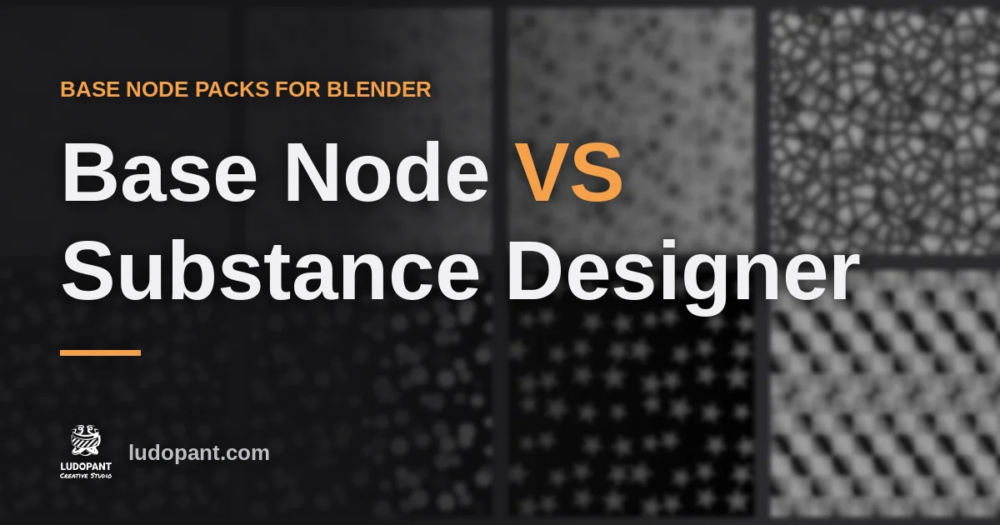

Products › Base Node Packs › VS › Substance Designer
Base Node VS Substance Designer

Adobe Substance 3D Designer, by Adobe. A node-based application for procedural materials, patterns and textures. It is sold by subscription, in the Substance 3D Texturing and Collection plans.[1,2]
Base Node is a text language for Blender's node trees, with a free add-on and paid packs of tested node groups. Substance Designer is a separate application whose graphs make texture maps, published as .sbsar files. Base Node builds the same kind of graph inside Blender: Texture Lab's atoms and filters run in Blender's compositor and tile at the borders, and Smart Materials turns the mesh maps into masks in shader nodes. The graphs are .bn text, but they stay in Blender.
Of the 9 capabilities below, Base Node covers 5, covers 3 in part and does not cover 1. The Substance Designer side of each row was checked on Adobe's pages on 2026-11-20; the numbers link to them.
What Substance Designer does, and how Base Node does it
| What Substance Designer does | Substance Designer | Base Node + pack | Status |
|---|---|---|---|
| The graph as a text file | A .sbs package is XML. The Substance Automation Toolkit's Python API reads and writes it.[3,4] | A .bn file, short enough to read and review, that the add-on reads into Blender and writes back. | Covered |
| Noises, patterns and a tile sampler | Tile Generator, Tile Sampler and Shape nodes, and noises such as Perlin Noise, Cells and Voronoi.[5,6,7] | Perlin noise and ridges, Voronoi cells, white noise, stripes and checker that tile; shapes with flat, cone and dome profiles; a tile sampler with seeded offset, size, rotation and grey per tile.
| Covered |
| Filters: blur, warp, slope blur, edges, histogram | Blur, Warp, Directional Warp, Slope Blur, Edge Detect and Histogram Scan nodes.[8,9,10,11] | Gaussian and directional blur, warp by a map's gradient, directional warp, slope blur, Sobel edge detection, histogram scan and range, levels and auto levels, all wrapping at the borders.
| Covered |
| Normal, curvature and occlusion from a height | Normal turns a height into normals, Curvature reads a normal map, Ambient Occlusion (HBAO) reads a height.[12,13,14] | Height to tangent-space normal in OpenGL or DirectX, curvature from a normal map, curvature and ambient occlusion approximated from heights.
| Covered |
| Per-pixel functions | The Pixel Processor runs a function graph for each pixel.[15] | No function graph per pixel: a compositor node group is the function, and Blender's compositor nodes are what it can use. | Partial |
| Flood fill | Flood Fill finds the separate tiles of a black-and-white image; Flood Fill to Gradient, Random Color and the like read its output.[16] | None yet. | Not covered |
| Mask generators from mesh maps | Mesh-based mask generators such as Metal Edge Wear and Dirt make masks from baked mesh maps.[17,18] | Shader groups that turn mesh maps into masks: levels, grunge, curvature, occlusion, edge wear, metal edge wear, dirt, dust, dripping rust, position, 3D distance, light.
| Covered |
| Mesh maps | Designer bakes curvature, ambient occlusion, thickness and position into textures, also from a high-poly mesh.[19] | Curvature, ambient occlusion, thickness, position and islands computed live by Geometry Nodes and stored as attributes on the mesh. No bake from a high-poly mesh.
| Partial |
| Materials used outside the application | Designer publishes .sbsar files that Painter loads, and Unity, Unreal Engine and Blender through Adobe's plug-ins.[20,21] | Texture graphs run in Blender's compositor and stay in Blender. Shader graphs can leave as MaterialX. | Partial |
Where Substance Designer is ahead
- A 3D view previews the material on a mesh live, with realtime renderers and a GPU path tracer.[22]
- The FX-Map node places and subdivides a pattern many times, each copy driven by function graphs.[23]
- The Pixel Processor runs a function graph on every pixel of an image.[15]
- Flood Fill finds each tile in an image, so later nodes colour, offset or index each one.[16]
- An
.sbsarkeeps its exposed parameters in Unity, Unreal Engine or Painter.[24] - The plans include the Substance 3D Assets library of materials, models and lighting environments.[2]
When to choose which
Choose Substance Designer when
You make materials for several applications and engines, need the Substance 3D Assets library, FX-Maps, Pixel Processor graphs or bakes from a high-poly mesh.
Choose Base Node when
Your materials end in Blender, and you want tileable textures and their normal, curvature and occlusion maps made by node groups you can read, diff and change, with no export step.
The packs
- Texture LabTileable textures made in node graphs of the Blender compositor.
- Smart MaterialsA texture painter's smart materials, live in Geometry Nodes and shaders.
Sources
- https://www.adobe.com/products/substance3d/apps/designer.html
- https://helpx.adobe.com/substance-3d/pricing-change.html
- https://experienceleague.adobe.com/en/docs/substance-3d-designer/using/glossary
- https://helpx.adobe.com/substance-3d-sat/pysbs-python-api/api-content/helpers/sbsparser.html
- https://helpx.adobe.com/substance-3d-designer/substance-compositing-graphs/nodes-reference-for-substance-compositing-graphs/node-library/texture-generators/patterns/tile-sampler.html
- https://helpx.adobe.com/substance-3d-designer/substance-compositing-graphs/nodes-reference-for-substance-compositing-graphs/node-library/texture-generators/patterns/tile-generator.html
- https://helpx.adobe.com/substance-3d-designer/substance-compositing-graphs/nodes-reference-for-substance-compositing-graphs/node-library/texture-generators/noises/perlin-noise.html
- https://helpx.adobe.com/substance-3d-designer/substance-compositing-graphs/nodes-reference-for-substance-compositing-graphs/atomic-nodes/warp.html
- https://helpx.adobe.com/substance-3d-designer/substance-compositing-graphs/nodes-reference-for-substance-compositing-graphs/node-library/filters/blurs/slope-blur.html
- https://helpx.adobe.com/substance-3d-designer/substance-compositing-graphs/nodes-reference-for-substance-compositing-graphs/node-library/filters/effects/edge-detect.html
- https://helpx.adobe.com/substance-3d-designer/substance-compositing-graphs/nodes-reference-for-substance-compositing-graphs/node-library/filters/adjustments/histogram-scan.html
- https://helpx.adobe.com/substance-3d-designer/substance-compositing-graphs/nodes-reference-for-substance-compositing-graphs/atomic-nodes/normal.html
- https://helpx.adobe.com/substance-3d-designer/substance-compositing-graphs/nodes-reference-for-substance-compositing-graphs/node-library/filters/effects/curvature-filter-node.html
- https://helpx.adobe.com/substance-3d-designer/substance-compositing-graphs/nodes-reference-for-substance-compositing-graphs/node-library/filters/effects/ambient-occlusion-hbao-filter-node.html
- https://helpx.adobe.com/substance-3d-designer/substance-compositing-graphs/nodes-reference-for-substance-compositing-graphs/atomic-nodes/pixel-processor.html
- https://helpx.adobe.com/substance-3d-designer/substance-compositing-graphs/nodes-reference-for-substance-compositing-graphs/node-library/filters/effects/flood-fill.html
- https://helpx.adobe.com/substance-3d-designer/substance-compositing-graphs/nodes-reference-for-substance-compositing-graphs/node-library/mesh-based-generators/mask-generators/metal-edge-wear.html
- https://helpx.adobe.com/substance-3d-designer/substance-compositing-graphs/nodes-reference-for-substance-compositing-graphs/node-library/mesh-based-generators/mask-generators/dirt.html
- https://helpx.adobe.com/substance-3d-designer/bakers.html
- https://helpx.adobe.com/substance-3d-designer/substance-compositing-graphs/publishing-substance-3d-asset-files-sbsar.html
- https://helpx.adobe.com/substance-3d-integrations/3d-applications/blender/the-substance-3d-panel.html
- https://helpx.adobe.com/substance-3d-designer/interface/3d-view.html
- https://helpx.adobe.com/substance-3d-designer/substance-compositing-graphs/nodes-reference-for-substance-compositing-graphs/atomic-nodes/fx-map.html
- https://helpx.adobe.com/substance-3d-integrations/game-engines/unity/changing-parameters.html
Adobe Substance 3D Designer is a trademark of Adobe, or of its owner. Other product names are trademarks of their owners. Ludopant and Base Node are not affiliated with or endorsed by them; the names are used only to compare. All comparisons.